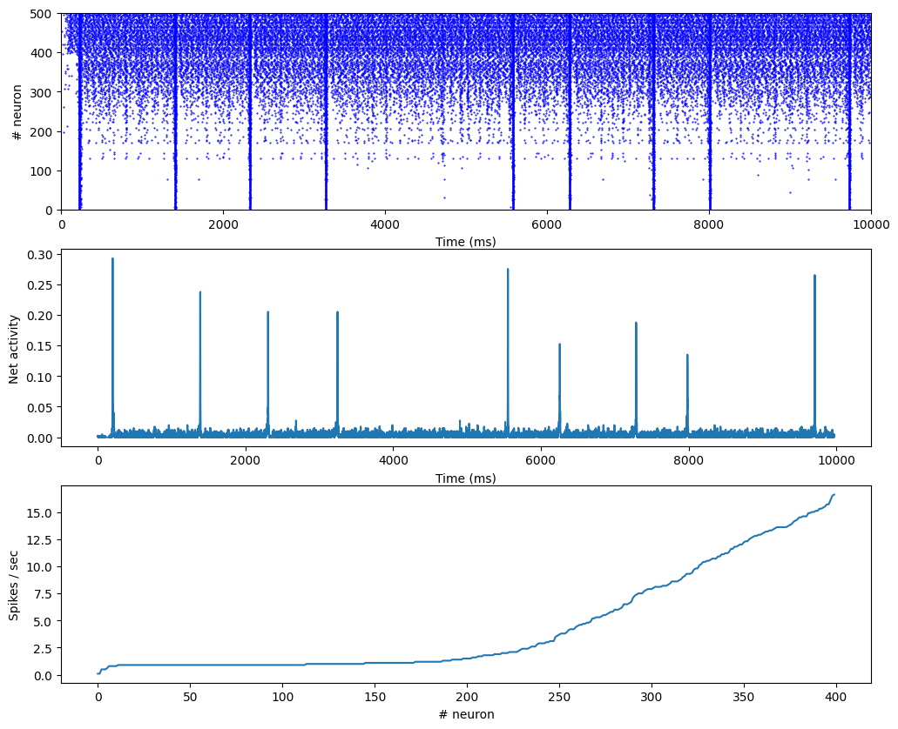

#!pip install ANNarchyShort-term Plasticity and Synchrony


Implementation of the recurrent network with short-term plasticity (STP) proposed in:
Tsodyks, Uziel and Markram (2000). Synchrony Generation in Recurrent Networks with Frequency-Dependent Synapses, The Journal of Neuroscience, 20(50).
import numpy as np
import ANNarchy as ann
ann.clear()
dt=0.25
ann.setup(dt=dt)ANNarchy 4.8 (4.8.2) on darwin (posix).This network uses simple leaky integrate-and-fire (LIF) neurons:
LIF = ann.Neuron(
parameters = """
tau = 30.0 : population
I = 15.0
tau_I = 3.0 : population
""",
equations = """
tau * dv/dt = -v + g_exc - g_inh + I : init=13.5
tau_I * dg_exc/dt = -g_exc
tau_I * dg_inh/dt = -g_inh
""",
spike = "v > 15.0",
reset = "v = 13.5",
refractory = 3.0
)
P = ann.Population(geometry=500, neuron=LIF)
P.I = np.sort(ann.Uniform(14.625, 15.375).get_values(500))
P.v = ann.Uniform(0.0, 15.0)
Exc = P[:400]
Inh = P[400:]Short-term plasticity can be defined by dynamical changes of synaptic efficiency, based on pre- or post-synaptic activity.
We define a STP synapse, whose post-pynaptic potential (psp, define by g_target) depends not only on the weight w and the emission of pre-synaptic spike, but also on intra-synaptic variables x and u:
STP = ann.Synapse(
parameters = """
tau_rec = 1.0
tau_facil = 1.0
U = 0.1
""",
equations = """
dx/dt = (1 - x)/tau_rec : init = 1.0, event-driven
du/dt = (U - u)/tau_facil : init = 0.1, event-driven
""",
pre_spike="""
g_target += w * u * x
x *= (1 - u)
u += U * (1 - u)
"""
)Creating the projection between the excitatory and inhibitory is straightforward when the right parameters are chosen:
# Parameters for the synapses
Aee = 1.8
Aei = 5.4
Aie = 7.2
Aii = 7.2
Uee = 0.5
Uei = 0.5
Uie = 0.04
Uii = 0.04
tau_rec_ee = 800.0
tau_rec_ei = 800.0
tau_rec_ie = 100.0
tau_rec_ii = 100.0
tau_facil_ie = 1000.0
tau_facil_ii = 1000.0
# Create projections
proj_ee = ann.Projection(pre=Exc, post=Exc, target='exc', synapse=STP)
proj_ee.connect_fixed_probability(probability=0.1, weights=ann.Normal(Aee, (Aee/2.0), min=0.2*Aee, max=2.0*Aee))
proj_ee.U = ann.Normal(Uee, (Uee/2.0), min=0.1, max=0.9)
proj_ee.tau_rec = ann.Normal(tau_rec_ee, (tau_rec_ee/2.0), min=5.0)
proj_ee.tau_facil = dt # Cannot be 0!
proj_ei = ann.Projection(pre=Inh, post=Exc, target='inh', synapse=STP)
proj_ei.connect_fixed_probability(probability=0.1, weights=ann.Normal(Aei, (Aei/2.0), min=0.2*Aei, max=2.0*Aei))
proj_ei.U = ann.Normal(Uei, (Uei/2.0), min=0.1, max=0.9)
proj_ei.tau_rec = ann.Normal(tau_rec_ei, (tau_rec_ei/2.0), min=5.0)
proj_ei.tau_facil = dt # Cannot be 0!
proj_ie = ann.Projection(pre=Exc, post=Inh, target='exc', synapse=STP)
proj_ie.connect_fixed_probability(probability=0.1, weights=ann.Normal(Aie, (Aie/2.0), min=0.2*Aie, max=2.0*Aie))
proj_ie.U = ann.Normal(Uie, (Uie/2.0), min=0.001, max=0.07)
proj_ie.tau_rec = ann.Normal(tau_rec_ie, (tau_rec_ie/2.0), min=5.0)
proj_ie.tau_facil = ann.Normal(tau_facil_ie, (tau_facil_ie/2.0), min=5.0)
proj_ii = ann.Projection(pre=Inh, post=Inh, target='inh', synapse=STP)
proj_ii.connect_fixed_probability(probability=0.1, weights=ann.Normal(Aii, (Aii/2.0), min=0.2*Aii, max=2.0*Aii))
proj_ii.U = ann.Normal(Uii, (Uii/2.0), min=0.001, max=0.07)
proj_ii.tau_rec = ann.Normal(tau_rec_ii, (tau_rec_ii/2.0), min=5.0)
proj_ii.tau_facil = ann.Normal(tau_facil_ii, (tau_facil_ii/2.0), min=5.0)We compile and simulate for 10 seconds:
# Compile
ann.compile()
# Record
Me = ann.Monitor(Exc, 'spike')
Mi = ann.Monitor(Inh, 'spike')
# Simulate
duration = 10000.0
ann.simulate(duration, measure_time=True)Compiling ... OK
Simulating 10.0 seconds of the network took 0.07543301582336426 seconds. We retrieve the recordings and plot them:
# Retrieve recordings
data_exc = Me.get()
data_inh = Mi.get()
te, ne = Me.raster_plot(data_exc['spike'])
ti, ni = Mi.raster_plot(data_inh['spike'])
# Histogram of the exc population
h = Me.histogram(data_exc['spike'], bins=1.0)
# Mean firing rate of each excitatory neuron
rates = []
for neur in data_exc['spike'].keys():
rates.append(len(data_exc['spike'][neur])/duration*1000.0)import matplotlib.pyplot as plt
plt.figure(figsize=(12, 10))
plt.subplot(3,1,1)
plt.plot(te, ne, 'b.', markersize=1.0)
plt.plot(ti, ni, 'b.', markersize=1.0)
plt.xlim((0, duration)); plt.ylim((0,500))
plt.xlabel('Time (ms)')
plt.ylabel('# neuron')
plt.subplot(3,1,2)
plt.plot(h/400.)
plt.xlabel('Time (ms)')
plt.ylabel('Net activity')
plt.subplot(3,1,3)
plt.plot(sorted(rates))
plt.ylabel('Spikes / sec')
plt.xlabel('# neuron')
plt.show()